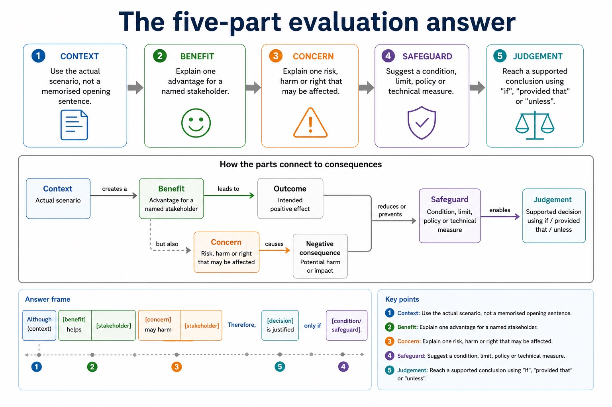

A balanced answer is not sitting on the fence. It is showing both sides, then choosing with evidence.
This review lesson connects Section 7: ethics, privacy, surveillance, data protection,
intellectual property, licensing, open-source/proprietary trade-offs, environmental impacts
and social impacts. The goal is to turn topic knowledge into mark-worthy evaluation answers.
Classifyidentify which Section 7 topic a scenario is testing
Balancewrite benefit, concern, stakeholder, safeguard and judgement
Improveconvert vague opinion into mark-scheme language
Lesson fact: what is protected, who owns it, permission and consequences
Lesson fact: Software ownership
Knowledge point 2
The five-part evaluation answer
1. ContextUse the actual scenario, not a memorised opening sentence.2. BenefitExplain one advantage for a named stakeholder.3. ConcernExplain one risk, harm or right that may be affected.4. SafeguardSuggest a condition, limit, policy or technical measure.5. JudgementReach a supported conclusion using "if", "provided that" or "unless".
Answer frame:Although [benefit] helps [stakeholder], [concern] may harm [stakeholder]. Therefore, [decision] is justified only if [condition/safeguard].
The five-part evaluation answer

The five-part evaluation answer: source-grounded visual explanation.
Lesson fact: 1. Context Use the actual scenario, not a memorised opening sentence.
Lesson fact: 2. Benefit Explain one advantage for a named stakeholder.
Lesson fact: 3. Concern Explain one risk, harm or right that may be affected.
Lesson fact: 4. Safeguard Suggest a condition, limit, policy or technical measure.
Lesson fact: 5. Judgement Reach a supported conclusion using "if", "provided that" or "unless".
Lesson fact: Answer frame:
Lesson fact: Although [benefit] helps [stakeholder], [concern] may harm [stakeholder]. Therefore, [decision] is justified only if [condition/safeguard].
Knowledge point 3
What Cambridge-style marking usually rewards
Precise termprivacy, copyright, e-waste, digital divide, open source, stakeholder.Scenario linkExplain how the issue affects the school, company, user or worker in the question.ConsequenceSay what happens: exclusion, legal risk, privacy loss, job displacement, reduced emissions.BalanceInclude both benefit and concern before final judgement in evaluate/discuss questions.
What Cambridge-style marking usually rewards
What Cambridge-style marking usually rewards: source-grounded visual explanation.
Lesson fact: Precise term privacy, copyright, e-waste, digital divide, open source, stakeholder.
Lesson fact: Scenario link Explain how the issue affects the school, company, user or worker in the question.
Lesson fact: Consequence Say what happens: exclusion, legal risk, privacy loss, job displacement, reduced emissions.
Lesson fact: Balance Include both benefit and concern before final judgement in evaluate/discuss questions.
Knowledge point 4
Common contrasts that stop vague answers
Contrast
Difference
Trap
Privacy vs security
Privacy concerns control of personal data; security protects systems/data from threats.
Encryption alone does not answer every privacy ethics question.
Copyright vs licence
Copyright protects the work; a licence grants permission under conditions.
Free to access does not mean free to reuse.
Open source vs no owner
Open source gives code access and permissions; copyright and licence terms still apply.
Do not say open source has no copyright.
Environmental vs social
Environmental affects resources/emissions/e-waste; social affects people, jobs, access and inclusion.
A strong answer can include both, but labels them clearly.
Common contrasts that stop vague answers
Common contrasts that stop vague answers: source-grounded visual explanation.
Lesson fact: Contrast
Lesson fact: Difference
Lesson fact: Privacy vs security
Lesson fact: Privacy concerns control of personal data; security protects systems/data from threats.
Lesson fact: Encryption alone does not answer every privacy ethics question.
Lesson fact: Copyright vs licence
Lesson fact: Copyright protects the work; a licence grants permission under conditions.
Lesson fact: Free to access does not mean free to reuse.
Lesson fact: Open source vs no owner
Lesson fact: Open source gives code access and permissions; copyright and licence terms still apply.
Lesson fact: Do not say open source has no copyright.
Lesson fact: Environmental vs social
Interactive topic classifier
Identify the Section 7 topic before answering
Interactive paragraph builder
Build a balanced Section 7 answer
Worked examples
Four mixed Section 7 answers with mark annotations
Practice with instant checking
Retrieve key vocabulary before timed writing
Mistake debugging
Fix weak Section 7 evaluation answers
Exam-style questions
Mixed Section 7 review questions with expandable MS
Attempt first. Then check whether your answer has topic vocabulary, stakeholder impact, balance and judgement.
Summary
Section 7 review in six exam-ready habits
ClassifyIdentify the topic before writing.
Name stakeholdersUse specific groups, not only "people".
BalanceGive benefit and concern in discuss/evaluate answers.
Use termsPrivacy, licence, e-waste and digital divide earn more than vague labels.
Add safeguardsUse transparency, limits, access control, training, repair or review.
JudgeConclude with conditions based on the scenario.
Homework
Prepare for mixed Section 7 questions
Task 1: Topic sorterCreate 15 scenario cards and label each as ethics, privacy, IP/licensing, software ownership, environmental impact or social impact.Task 2: Rewrite weak answersRewrite five weak claims into balanced paragraphs using: benefit, concern, stakeholder, safeguard, judgement.Task 3: Timed review responseAnswer in 10 minutes: "Evaluate the use of computer-based monitoring in a school." Include privacy, safety and one safeguard.